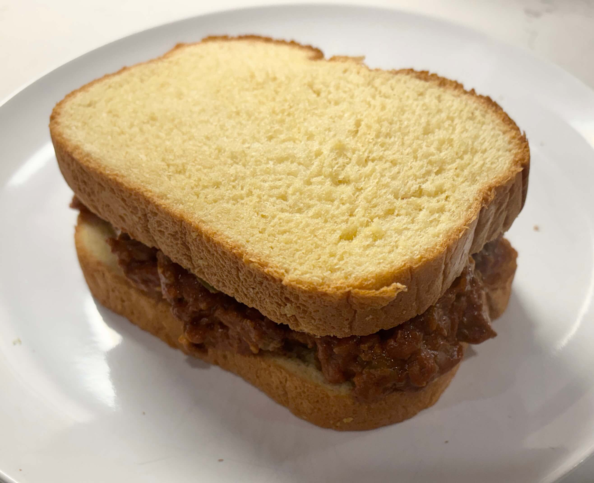

Home
Sloppy Joes

5 servings
Ingredients
- 1 Tbsp butter
- 1 tsp olive oil
- 1 lb. ground beef
- 1/3 green bell pepper, minced
- 1/2 large yellow onion, minced
- 3 cloves garlic, minced
- 1 Tbsp tomato paste
- 2/3 cup ketchup
- 1/3 cup water
- 1 Tbsp brown sugar (or less, if you prefer)
- 1 tsp yellow mustard
- 3/4 tsp chili powder
- 1/2 tsp Worcestershire sauce
- 1/2 tsp kosher salt
- 1/4 tsp red pepper flakes (optional)
- 1/4 tsp black pepper
- dash of hot sauce (optional)
- dash of soy sauce (optional)
- shredded cheese (optional)
Steps
- Heat butter and oil in large skillet over MED/MED-HIGH heat. Add beef and brown, breaking apart into crumbles as it cooks, about 5 minutes. Transfer to colander to drain.
- Add onion and bell pepper to same skillet and cook 2-3 minutes, until soft. Add garlic and cook 30 seconds or so, until fragrant. Add beef back to the skillet and add tomato paste. Stir well.
- Add ketchup, water, brown sugar, mustard, chili powder, Worcestershire sauce, salt, red pepper flakes (if using), and black pepper. Stir well to combine.
- Cook over MED heat for 10-15 minutes, until mixture has thickened to your liking. Remove from heat and serve over toasted buns.